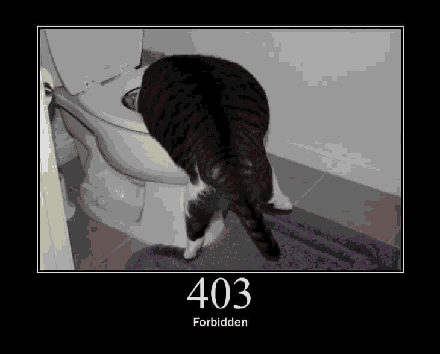

HackerOne: CTF: Micro-CMS
Table of Contents
Introduction
Hello World! Long time no see! After taking a break from writing, to focus on the rest of my responsibilities and tasks, I’m back with another small walkthrough on my latest set of mini cybersec challenges.
Having canceled my THM subscription1, I went back to my ebook library, to start ticking off some more books from those included in my carefully picked humble bundles. I started reading Li’s Bug Bounty Bootcamp. It has been incredible so far and (maybe due to the twisted way my mind works :P) inspiring.
It made me want to put some effort in what could be considered my weakest aspect in cyber security testing, web security. I intend to focus on this field for the next couple of months, building a solid foundation so that I can later use these skills more widely. Along with the book, I decided to get practical, creating a HackerOne account, and doing some Hacker101 challenges. Here is one of those I have since completed.
Testing
Heading to the website we can see that there are some pre-existing articles, and we can freely create some ourselves. Since it was (is?) the first time I am using my own set up and not some preconfigured distro/complete installation to practice Web Recon (and exploitation), I decided to make it harder: not only by limiting the tools to those already installed (namely a proper burp suite community installation, along with my programming setup), but also by using python to automate any tasks I wanted to automate.
Brushing up python can not possibly hurt.
This definitely should not be listed as a fuzzer but, well.
Seeing that the (first) article I created had an id of 8 (thus
existed in /page/8) without that many articles being apparent, I
thought it might be interesting to check for other ids.
Instead of doing that with an already-existing fuzzer, I shall do it in python
(and literate programming for that matter :P):
- Check all pages from 1 to 10, paying attention to the status codes to see if they existed
# Snippet to open all pages in my browser # Verdict: Inefficient and illogical, I only want to get the interesting pages import webbrowser for article in range(1,10): webbrowser.open('placeholder-link' +str(article))
Or, in a more convenient manner, allowing for our requests to be stored within Burp Suite as well:
# Snippet to open all pages virtually in python, utilizing burp at the same time # Verdict: The way to go, quickly getting the results I want without messing with GUI import requests result = [] proxy={'https': '127.0.0.1:8080'} mylink='placeholder' # For easier modification for article in range(1,10): try: resp = requests.get(mylink+str(article), verify=False, # Avoid self-signed certificate errors proxies=proxy, allow_redirects=True,) if resp.status_code != 404: # We do not care about 404s result.append(f"Intersting! {resp.status_code}: Article {article}\n") except Exception as e: return("Noice:", e) return result
#+RESULTS: Smarter Implementation | Intersting! 200: Article 1\n | Intersting! 200: Article 2\n | Intersting! 403: Article 6\n | Intersting! 200: Article 8\n |
The code itself is not spectacular (in fact I could not even write its output without making a spelling mistake one might notice), but allows us to witness an abnormality: Post 6 gives us 403: forbidden

Figure 1: Good ol’ opencat function becomes handy when writing such posts
XSS
My first thought, seeing a lot of input fields was to check for self-XSS on what was already available to me:
- On a new post’s title
- On a new post’s contents
Getting an alert(1) inside the title, simple enough, rewards us with a
flag. No check is present there, unlike the contents box, where script
gets substituted with scrubbed, not allowing the code to run without
some evasion trick. Luckily, OWASP XSS Filter Evasion Cheatsheet
has some tricks we can use, getting the another flag.
At this point we have flags 2,3, searching for 1,2.
<IMG SRC=/ onerror="alert(1)"></img>
Getting access to the forbidden file
I was so sure that the answer to bypassing the 403 there would be
something extremely silly… and it was :P. Just heading to the
respective /edit page and we can get what we want. Now flag 2 is all we
want to wrap this mini challenge.
Not-so-good SQLi
This bothered me a lot, not knowing where to look and what to pay attention to. After feeling like I was hitting my head against a wall for more than 20 minutes, I saw Tib3rius video on the room, in which even though this flag is not revealed, I got a great idea on how to go looking for it: SQL injection on the different pages. It worked on the first I tried.
May seem silly, but for some reason I had not given this possibility a thought till that moment… Will do from now on.
Footnotes:
Probably just for the time being, knowing that I would not take much advantage of it since I will be focusing increasingly more in getting fully caught up with ECE.